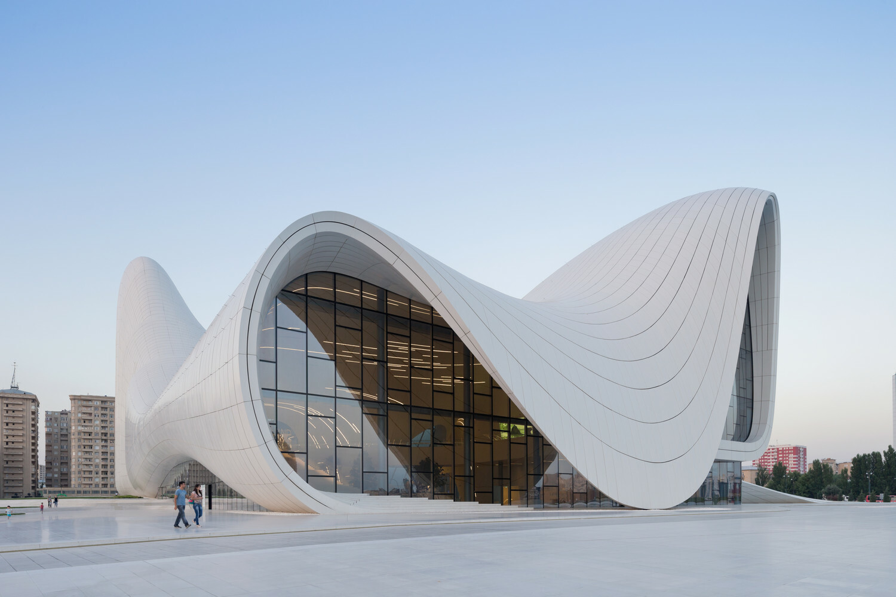
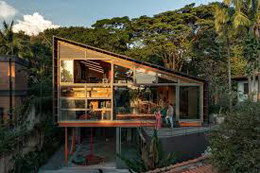
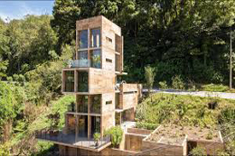
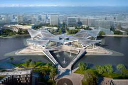

AN ARCHIVAL COLLECTION OF ACADEMIC AND PERSONAL PROJECTS FOCUSING ON STRUCTURAL INTEGRITY, COMPUTATIONAL DESIGN, AND INTERACTIVE SYSTEMS. 2022 - 2024.

Exploration of generative patterns using modular arithmetic. Focus on visual weight and balance within a constrained 8px grid system.
#Systems #Typography

Demonstrating rapid state transitions and color inversion through standard CSS utility classes. Hover over this card to view the visual transformation.
#Interactive #Motion
Multi-dimensional data visualisation for urban traffic flow. Utilising dark-gray scalar values to represent density and frequency.
#Data_viz #Algorithmic
Design study of brutalist architecture translated into digital interface components. Emphasis on raw material feel and high contrast.
#Brutalism #UI_Design

Responsive system framework for educational platforms. Prioritising information hierarchy and accesible data nodes.
#Framework #UX_research

Experimental log of 100 days of layout experiments. Documentation of grid0breaking patterns and asymmetrical balance.
#Layout #Experimental